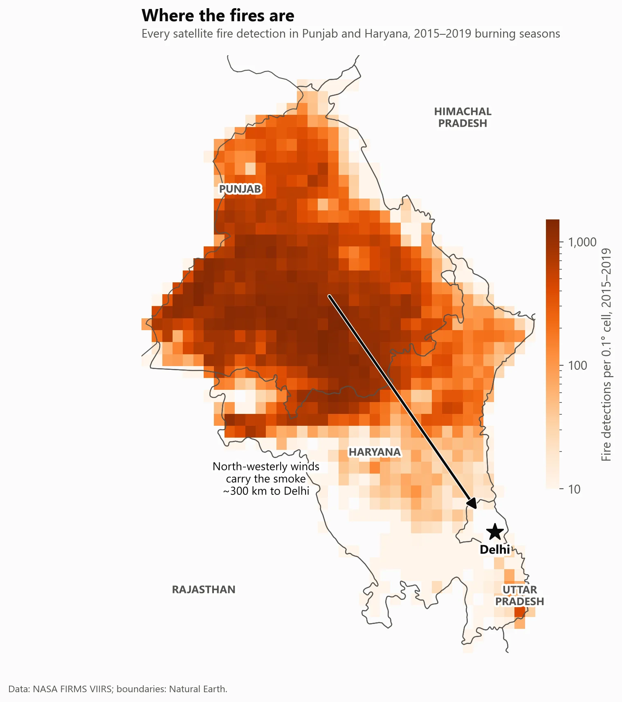
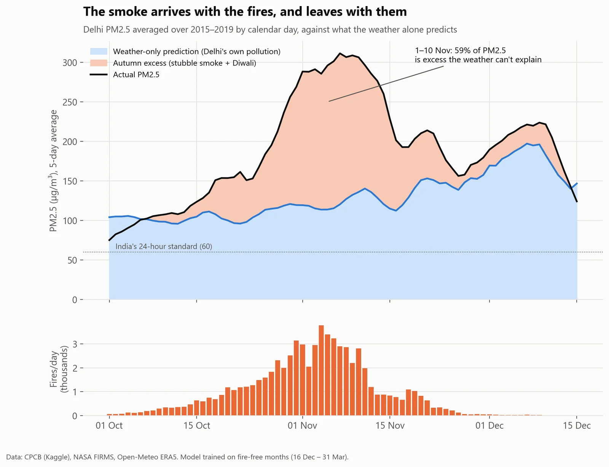
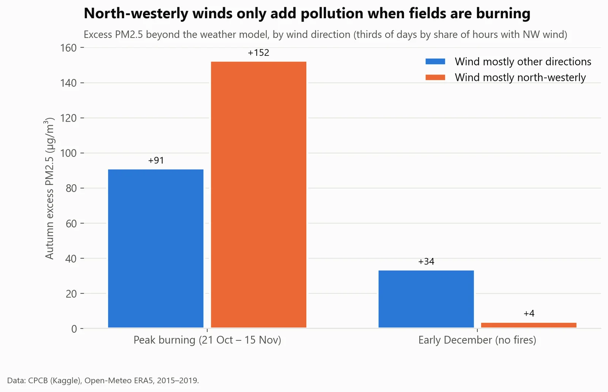
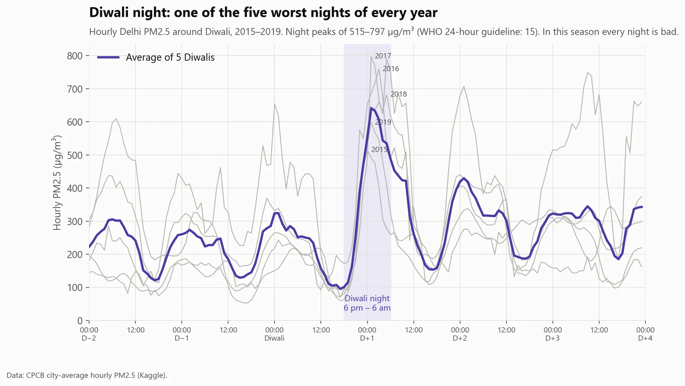
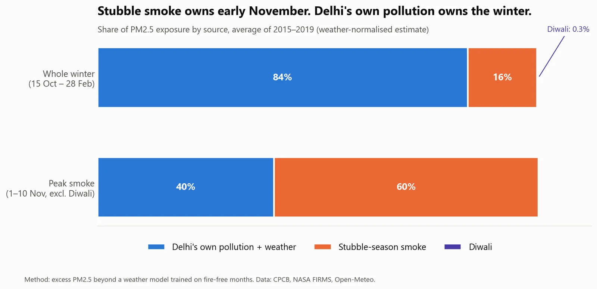
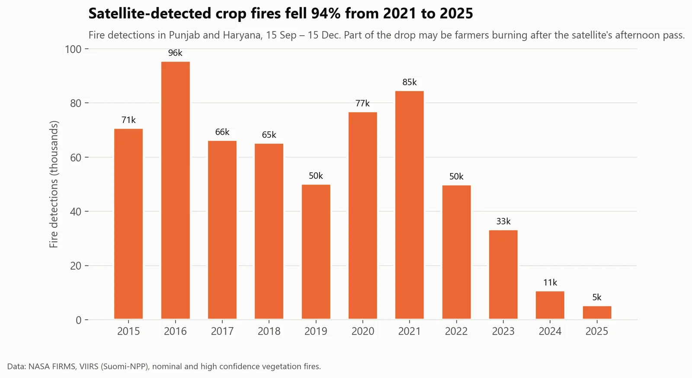

Environment & health · Delhi
Who's really choking Delhi: Diwali crackers or Punjab's stubble fires?
- Business question
- To cut November smog, should Delhi tackle Diwali firecrackers or crop fires?
- Key finding
- Crop fires. They drive about 60% of early-November PM2.5, while Diwali adds about 2% of the season's extra pollution. Over the whole winter, 84% of the pollution is Delhi's own, trapped by the weather.
- Recommendation
- Fund crop-residue alternatives for October–November, and year-round controls on Delhi's own sources (traffic, industry, dust) for the winter. A firecracker ban addresses one night.
- Estimated impact
- ~60%Of early-November PM2.5 from crop-fire smoke; Diwali adds about 2% of the season's extra pollution.
- Data
- Delhi air quality 2015–2020 (CPCB), 600,000+ NASA satellite fire detections, hourly weather
- Period
- Five winters, 2015–2019
- Tools
- Python: pandas, statsmodels, scikit-learn
Results






How I did it
- Started with the obvious approach: regress daily pollution on the number of fires. It gave a big, "significant" effect.
- Tested it with a placebo: I fed the model the wrong year's fires. The fake fires "explained" pollution just as well, which meant the model was picking up the season, not the smoke. So I dropped that approach.
- Switched to weather normalisation: learn how weather drives Delhi's pollution in months with almost no fires (mid-December to March), predict October–November from the weather alone, and treat the gap as autumn's extra pollution.
- Checked it: the gap is close to zero before burning starts and after it ends, it's larger when the wind comes from Punjab, and five different model versions all put it at 40–46% of PM2.5 from mid-October to the end of November.
What could make this wrong
- The "extra" pollution is autumn-only pollution. Its timing and wind pattern point to the fires, but other autumn sources are mixed in.
- The measured air-quality data ends in mid-2020, so it can't show whether Delhi's air improved as fires fell after 2021.
- Five winters is a small sample.
What I learned
- A 'significant' regression can be measuring the season, not the cause. A placebo test exposed it.
- Weather normalisation separates what's emitted from what the weather traps.
- Testing the model on days it never saw (before and after burning) is what made the result believable.
What I'd do next
- Extend the PM2.5 data past 2020 to test whether the air improved as fires fell 94%.
- Use more weather grid points and station-level models.
- Estimate the health cost of the smoke weeks (hospital visits, lost workdays).